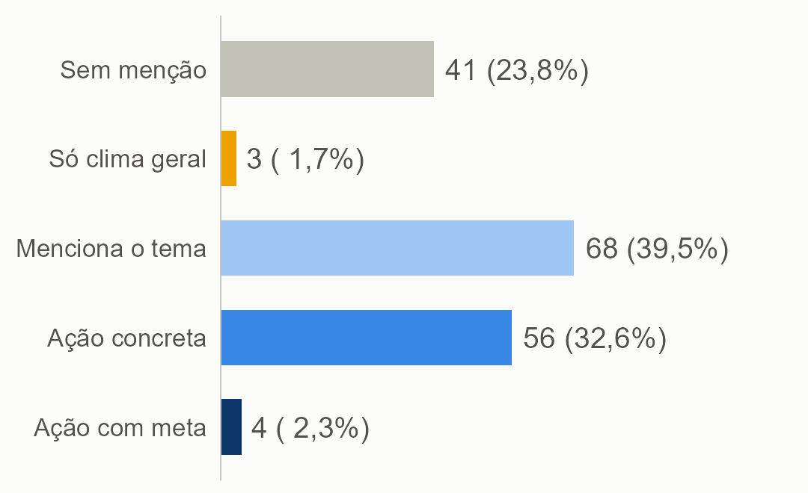
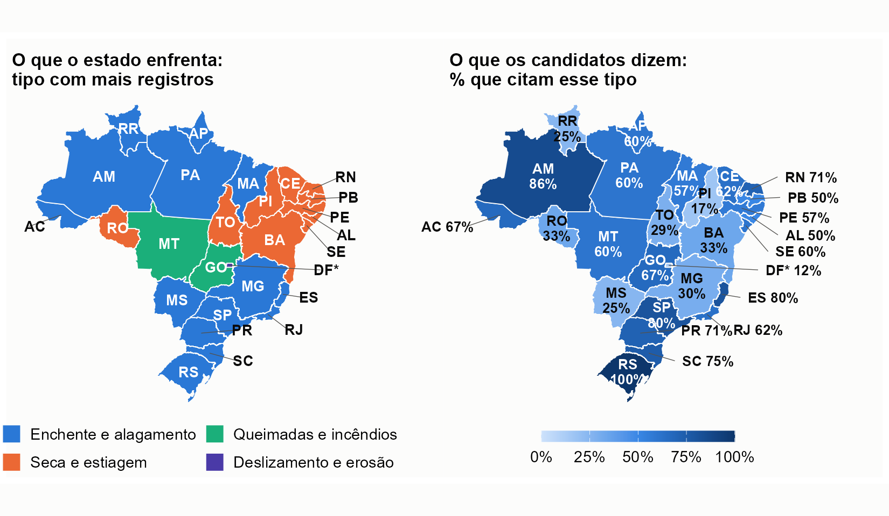

O governador é peça central antes, durante e depois de cada desastre, e o plano de governo é o documento público em que a promessa fica registrada. Lemos os planos de {{N}} candidatos e estas são as oito conclusões.
{{P_MENCAO}}% mencionam risco ou desastre, mas só {{P_ACAO}}% têm ação concreta na maior parte das passagens e {{N_META}} ligam a ação a meta, prazo, indicador ou orçamento.
Só {{PE4}}% das passagens sobre o tema chegam a esse nível. Meta quantificada aparece em {{P_METAQ}}% dos planos que mencionam o tema, prazo em {{P_PRAZO}}% e valor em {{P_ORC}}%.
Tarcísio (SP), com R$ 25 bilhões até 2029; Carlos Machado (SP), com R$ 1,5 bilhão para Defesa Civil e bombeiros; e Ben Mendes (MG), com R$ 300 a 520 milhões em quatro anos.
Prevenção e preparação aparecem em {{P_PREV}}% dos candidatos, resposta em {{P_RESP}}% e recuperação em {{P_REC}}%. Só {{N_CICLO}} cobrem o ciclo inteiro.
No Piauí, a seca é {{PI_SHARE}}% dos registros, mas só {{PI_CITA}}% dos candidatos a citam. {{N_NC}} candidatos não citam o principal desastre do próprio estado.
Balanço do que já foi feito e crítica ao governo se misturam às propostas: {{N_REB}} das {{N_REV}} passagens de maior concretude foram rebaixadas na revisão manual.
A presença do tema vai de {{P_ME_5MIL}}% nos planos com menos de 5 mil palavras a {{P_ME_20MIL}}% nos de mais de 20 mil. A concretude não muda entre campos políticos.
{{N_SO_CLIMA}} candidatos tratam só de agenda climática geral, sem risco nem desastre, e a maioria dos que falam de clima também trata de desastre.
O tema é quase consensual como menção e raro como compromisso verificável.
{{N_MENCIONA}} candidatos citam o tema em diagnósticos, diretrizes e menções, sem que a ação predomine. {{N_ACAO}} têm ação concreta em metade ou mais das passagens, e {{N_META}} associam essa ação a meta, prazo, indicador ou orçamento.
Aparecem em {{P_PREV}}% dos candidatos, contra {{P_RESP}}% de resposta e {{P_REC}}% de recuperação. A adaptação climática explícita aparece em {{P_ADAPT}}%. Isso contraria a expectativa de que o incentivo eleitoral favoreceria o discurso sobre socorro e reconstrução.
As enchentes são o tipo mais citado ({{P_HIDRO}}%), seguidas da seca ({{P_SECA}}%) e das queimadas ({{P_FOGO}}%). {{P_GENERICA}}% falam de desastres em geral. Deslizamentos, calor extremo, erosão costeira, barragens e acidentes tecnológicos aparecem bem menos.
Só {{N_SO_CLIMA}} candidatos falam de clima sem tratar de desastre, e o caso extremo, com 32 passagens de agenda climática, decorre do tamanho e da estrutura do plano, e não de um erro. A mesma expressão, "resiliência climática", pode ser slogan ou nome de um programa de obras.

Das {{N_JANELAS}} passagens relevantes, {{PE1}}% descrevem o problema, {{PE2}}% são diretrizes e {{PE3}}% são ação concreta, e só {{PE4}}% trazem ação com meta, prazo, indicador ou orçamento.
Entre os candidatos que mencionam o tema, {{P_ORGAO}}% nomeiam um órgão responsável, mas só {{P_PRAZO}}% citam prazo, {{P_METAQ}}% trazem meta quantificada e {{P_ORC}}% falam em valor ou orçamento.
Os demais valores em reais encontrados nas passagens são balanço, crítica, dano registrado, carteira de projetos ou dinheiro de outro tema, como a dívida do estado com a União.
| Candidato | Valor | O que promete |
|---|---|---|
| Tarcísio (Republicanos-SP) | R$ 25 bilhões | Até 2029, em adaptação e resiliência climática |
| Carlos Machado (PCB-SP) | R$ 1,5 bilhão | Defesa Civil e Corpo de Bombeiros |
| Ben Mendes (Missão-MG) | R$ 300 a 520 milhões | Em quatro anos, para fiscalização, defesa civil e infraestrutura |
Um plano pode dizer "executamos", "os governos não fizeram" ou "vamos construir", e as três frases têm objeto concreto. Por isso revisamos à mão as passagens de nível mais alto: {{N_REB}} de {{N_REV}} foram rebaixadas. Entre os governadores em exercício, {{P_TV_INC}}% das passagens concretas trazem verbo de ação no passado, contra {{P_TV_NAO}}% nos demais.
O plano nem sempre fala do desastre que o estado sofre, e quem mais sofre não promete mais.
Em média, {{P_CITA_PRINC}}% dos candidatos citam o principal tipo de desastre do seu estado. No Piauí, a seca é {{PI_SHARE}}% dos registros e só {{PI_CITA}}% a citam; no Rio Grande do Sul, todos citam enchente. {{N_NC}} candidatos não citam o principal desastre do próprio estado.
A intensidade dos desastres de cada estado não se associa à concretude dos planos: a correlação de Spearman é de {{RHO}}, praticamente nula. Estados muito expostos e com poucos candidatos com ação concreta merecem atenção.
De {{P_ME_5MIL}}% nos planos com menos de 5 mil palavras a {{P_ME_20MIL}}% nos de mais de 20 mil. {{N_CURTOS}} planos têm menos de 2.000 palavras, e esses candidatos não devem ser comparados aos demais sem essa ressalva.
Na extrema-esquerda, {{P_ME_EE}}% mencionam o tema, contra {{P_ME_DIR}}% na direita, {{P_ME_XD}}% na extrema-direita e 100% na esquerda e centro-esquerda, em parte por planos mais enxutos. A concretude não difere entre campos, e os cinco maiores e os cinco menores percentuais de ação concreta reúnem candidatos de campos opostos.
Todos os {{N_INC}} mencionam o tema e {{P_INC_ACAO}}% têm ação concreta predominante, contra {{P_NAOINC_ACAO}}% dos demais. Seus planos, porém, são mais longos e trazem mais balanço do que proposta, e por isso a diferença não deve ser lida como efeito do cargo.

Sem codificação humana, medimos a concordância entre dois modelos: boa para tipos de desastre, aceitável para relevância (alfa de {{ALFA_REL}}) e fraca para concretude ({{ALFA_ESP}}).
De 4 a 10 candidatos por UF. Os percentuais são retratos de 2026, e não tendências do estado ou do partido.
O candidato pode tratar do tema em outros espaços, ou com outras palavras que o dicionário capta só em parte.
O Atlas reúne registros feitos pelos municípios: estados que notificam mais aparecem mais expostos.
Que ação de prevenção o candidato promete, com que meta, prazo e orçamento?
O plano fala do desastre que mais atinge o estado, e não só de "eventos extremos"?
A frase diz o que será feito, ou apenas o que já se fez ou o que o outro não fez?
Código, codebook, tabelas e figuras: {{REPO_CURTO}}. A leitura dos planos usa o pacote acR, de autoria do pesquisador e disponível no CRAN.
Dois modelos abertos (gpt-oss-20b e gemma-4-26b) rodaram localmente como instrumento de medida. O Claude apoiou código e versões preliminares de texto. Pergunta, codebook, revisão manual e interpretação são do autor.
Como citar. HENRIQUE, A. Risco e desastre nos planos de governo dos candidatos a governador (2026). Sumário executivo. {{ANO}}. Disponível em: {{REPO}}. Contato: andersonheri@gmail.com, ORCID 0000-0002-1842-2725. Documento técnico não revisado por pares; as opiniões são do autor e não representam posição das instituições a que se vincula.